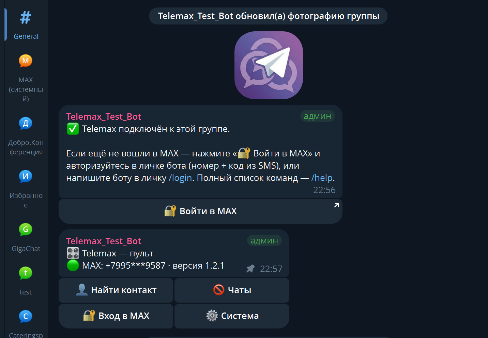
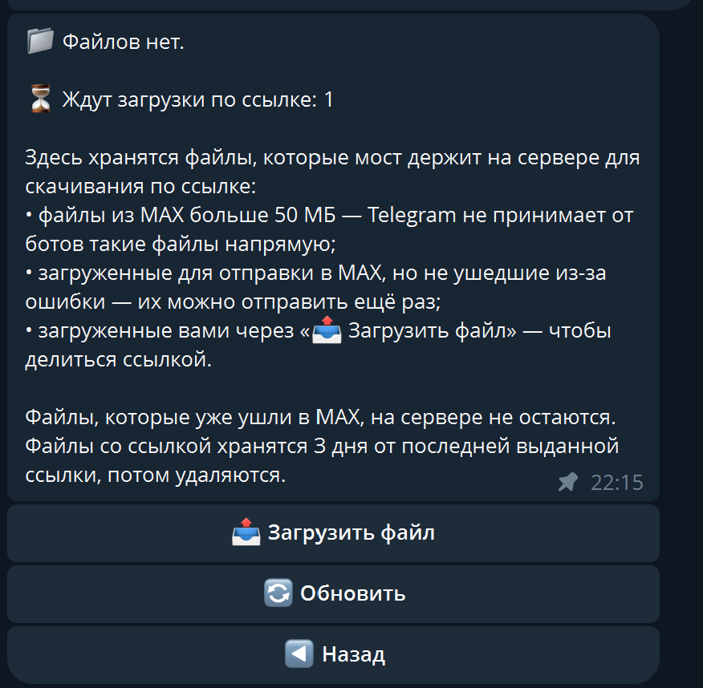
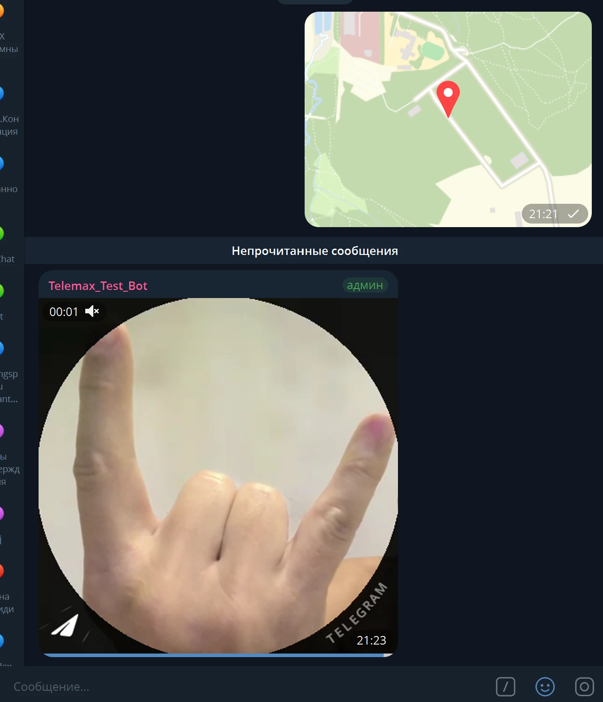
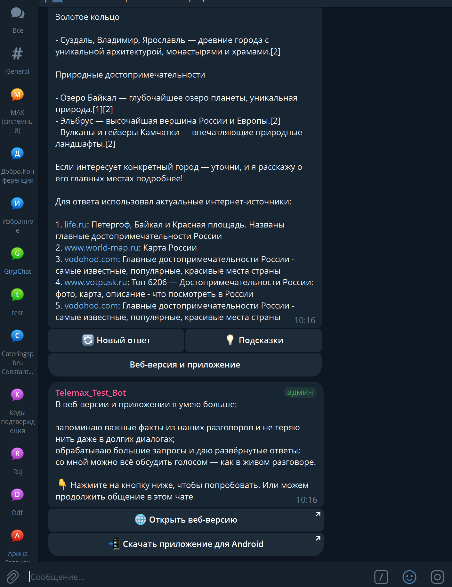
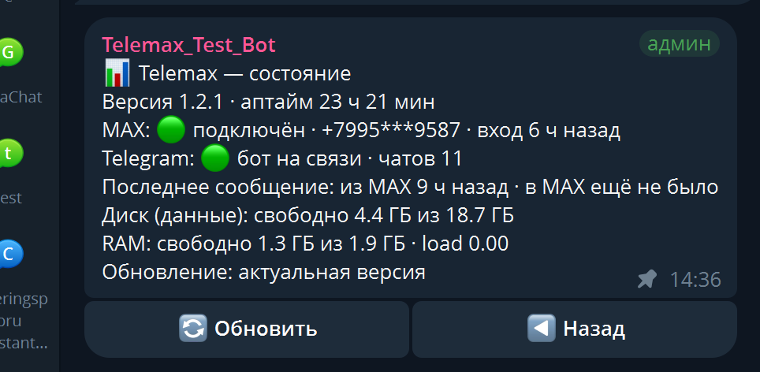

Переписка из MAX —
прямо в Telegram
Telemax — бесплатный мост между MAX и Telegram с открытым кодом. Он входит в ваш личный аккаунт MAX по номеру и приносит все чаты в Telegram: каждый чат — отдельная тема в вашей группе. Читаете и отвечаете из привычного Телеграма, а мост работает на вашем сервере.
Новое · v1.3.12📜 История за нужный срок и ровное вертикальное видеоВсе переписки — в одном мессенджере
Работа, школьный чат, родня — в MAX, а всё остальное — в Telegram. Telemax собирает их вместе: сообщения из Макса приходят в Телеграм, а ваши ответы уходят обратно от вашего имени. Не нужно переключаться между приложениями и держать открытыми два мессенджера.
Личный аккаунт, а не бот
Telemax входит вашим личным аккаунтом MAX по номеру — поэтому в Telegram сами приходят все ваши чаты, диалоги и группы. Мостам-ботам это недоступно.
Полноценная переписка в обе стороны
Все типы сообщений
Текст, фото, видео, файлы, голосовые, кружки, стикеры (и анимированные), опросы, геолокация и контакты — туда и обратно.
Чат = тема
Каждый чат MAX — отдельная тема в группе Telegram. В групповых чатах видно, кто написал, есть список участников и личка в одно нажатие.
Ответы, правки, реакции
Ответы с переходом к оригиналу, правки с пометкой, удаление в обе стороны. Реакции тоже синхронизируются.
Большие файлы
Из MAX больше 50 МБ — кнопкой «⬇️ Скачать» с вашего сервера. В MAX — до 4 ГБ через страницу загрузки, в обход ограничений бота.
Свой файлообменник
Положите на свой сервер файл любого размера и делитесь ссылкой где угодно — или отправьте его в любой чат MAX командой /file, не загружая заново.
Кнопки ботов MAX
Ссылки открываются, «Скопировать код» копирует, нажатия уходят боту от вашего имени — как в приложении.
Трансляция
Новые сообщения чата MAX — в любые группы и каналы Telegram, для тех, у кого нет MAX. Командой /broadcast, мест сколько угодно.
Контакты MAX
Найденного человека — в контакты MAX одной кнопкой, и в /info тоже. Контакт из Telegram сохранится под тем же именем.
Группы MAX из Telegram
Создать группу, пригласить или удалить участника, переименовать, выйти — командами прямо из темы.
Пульт управления
Команда /panel: поиск по номеру, MAX ID или нику, новый чат в одно нажатие, файлы, статус сервера, пауза и бан чатов.
Вход в MAX в личке бота
Номер, код из SMS и пароль вводятся в личных сообщениях бота — в группу они не попадают.
Обновления по кнопке
Бот сам сообщает о новой версии. Релизы подписаны, а если обновление сорвётся — мост вернётся на прежнюю версию.
Ничего не теряется
Пропущенное, пока мост был недоступен, догружается само. Сбои связи не сбрасывают вход в MAX.
Прокси для Telegram
Если сервер выходит в Telegram только через прокси — подключите свой SOCKS5 или HTTP. MAX при этом идёт напрямую.
Несколько мостов
Второй номер MAX — второй мост на том же сервере, той же командой. Обновляются все сразу.
Свой сервер и открытый код
Telemax работает на вашем сервере с вашим Telegram-ботом: переписка идёт только между MAX, вашим сервером и Telegram. Код открыт под лицензией AGPL-3.0 — можно прочитать каждую строчку. Мост не держит открытых портов: 80 и 443 открываются, только пока живёт ссылка на файл. Установщик предлагает поставить Fail2ban от подбора паролей SSH.
Разработчику уходят только анонимная статистика установок и отчёты об ошибках — без текста переписки,
названий чатов и номера телефона. Отключаются одной строкой TELEMETRY=off.
Три шага — и мост работает
Сервер
VPS на Ubuntu 22.04+ или Debian 12+. Хватит и меньше 1 ГБ памяти и 3 ГБ свободного места.
Бот и группа
Бот в @BotFather, группа с включёнными темами, бот в ней — администратор с правом «Управление темами».
Одна команда
Запустите от root команду ниже, затем /login в личке бота — и чаты MAX начнут появляться в группе.
curl -fsSL https://raw.githubusercontent.com/Trollobot/Telemax/main/install.sh | bash
curl -fsSL https://zergont-gate.duckdns.org/install.sh | bash
Скриншоты





Что стоит знать заранее
- Проект неофициальный и работает с вашим аккаунтом MAX на ваш страх и риск.
- Соединения шифруются: MAX ↔ сервер по TLS, сервер ↔ Telegram по HTTPS. Но шифрование не сквозное: ваш сервер видит переписку — иначе он не смог бы её пересылать, — поэтому его стоит защищать.
- Любой участник группы в Telegram видит все ваши чаты MAX — держите группу закрытой.
- Аккаунт MAX нужен свой: зарегистрироваться и поставить пароль можно только в приложении MAX.
- Для больших файлов нужен белый IP сервера и открытые порты 80 и 443. Если сервер дома за роутером без проброса портов — установщик предложит выключить большие файлы, всё остальное работает.
- Звонки приходят только уведомлениями, мини-приложения ботов открываются в MAX.
- Разработчик один: баги бывают, зато чинятся быстро.
Частые вопросы
Как читать и отвечать на сообщения MAX в Telegram?
Поставьте Telemax на свой сервер и войдите в свой аккаунт MAX через бота. Все чаты MAX появятся в вашей группе Telegram отдельными темами: отвечаете в теме — ответ уходит в MAX от вашего имени.
Нужно ли приложение MAX?
Один раз — да: аккаунт MAX регистрируется в приложении, там же ставится пароль. Дальше переписка идёт через Telegram, и приложение можно не открывать.
Это бот в MAX или мой аккаунт?
Ваш личный аккаунт: Telemax входит по номеру телефона, поэтому приходят все ваши чаты, а не только те, куда добавлен бот. Со стороны Telegram работает ваш собственный бот.
Можно ли начать новый чат из Telegram?
Да: в пульте «Найти контакт» — по номеру в любом виде, по MAX ID или нику бота. Или отправьте в общую тему группы контакт из телефонной книги. Не найдётся только тот, кто закрыл поиск по номеру в настройках приватности MAX, — тогда пусть напишет первым.
Можно ли показать чат MAX тем, у кого нет MAX?
Да, трансляцией: команда /broadcast в теме чата — и новые сообщения этого чата копируются в обычную группу или канал Telegram. Мест сколько угодно, бота туда Telegram добавит сам. Трансляция идёт в одну сторону: что пишут там, в MAX не уходит.
Передаются ли файлы, голосовые и кружки?
Да, в обе стороны. Файлы больше 50 МБ из MAX приходят ссылкой на ваш сервер, а в MAX можно отправить файл до 4 ГБ через страницу загрузки. Для таких ссылок нужен белый IP сервера и открытые порты 80 и 443 — установщик проверит это сам и, если чего-то не хватает, объяснит.
Сколько это стоит?
Telemax бесплатный, весь функционал открыт. Платите только за свой сервер — хватит самого простого VPS.
Заработает ли на российском VPS?
Да. Если Telegram с сервера не открывается, мост может работать через прокси. Сам прокси нужен свой (SOCKS5 или HTTP) — его адрес указывают при установке, MAX при этом идёт напрямую.
Можно ли подключить два аккаунта MAX?
Да: второй мост ставится той же командой в соседний каталог, со своим ботом и своей группой. Автообновление обслуживает все мосты на сервере.
Что будет, если GitHub недоступен?
Установка и обновления сами переключатся на зеркало проекта. Каждый релиз подписан, и мост проверяет подпись перед установкой — неважно, откуда пришёл код.
Это безопасно?
Соединения шифруются: MAX ↔ сервер по TLS, сервер ↔ Telegram по HTTPS. Код и данные — на вашем сервере, посредников нет, код открыт. Но шифрование не сквозное: сервер видит переписку, иначе не смог бы её пересылать, — поэтому его стоит защищать. Проект неофициальный — используйте на свой страх и риск.
Нашли баг, есть идея или вопрос?
Напишите боту @TelemaxSvv_bot в Telegram: сообщение придёт разработчику, а ответ вернётся вам
в тот же чат. Вопросы по установке тоже сюда. Если мост уже стоит, ссылка на бота есть и в /help.
Поддержать развитие проекта
Весь функционал бесплатный. Если мост пригодился — можно подогреть мотивацию разработчика:
здесь или командой /donate прямо в боте.
UQALpK2PKI90-XpupOM8sRJGdwrFMsPcwQZPR0k180umXBcA